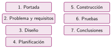
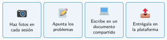

La memoria técnica
🤔 Pienso5 min
Qué hago aquí: Piensa un momento y contesta con lo que ya sabes. No pasa nada si no lo sabes: es para empezar.
El curso que viene, otro grupo quiere construir vuestro robot. Escribe dos cosas que necesitarían saber.
📖 Leo y aprendo15 min
Qué hago aquí: Lee despacio, mira los dibujos y los ejemplos, y quédate con la idea clave del final.
Al acabar, hay que contar qué se hizo, cómo y qué se aprendió.


✏️ Hago25 min
Qué hago aquí: Haz las actividades en orden. Empieza siempre por las básicas.
Ordena los apartados del 1 al 7: pruebas portada diseño conclusiones construcción problema planificación
¿En qué apartado va cada cosa?
| Foto del robot montado • | • Conclusiones |
| Coste del PLA • | • Construcción |
| «Aprendimos a usar sensores» • | • Planificación |
Escribe la portada de la memoria de vuestro proyecto.
Esta prueba está mal escrita: «Probamos el robot, no iba bien y lo arreglamos». Reescríbela como en el ejemplo.
✏️ Puedes responder escribiendo, con un dibujo o un esquema, o contándolo en voz alta.
🚀 Amplío (si quieres saber más)
Qué hago aquí: ¿Has terminado? Lee la curiosidad o elige el reto. Es voluntario.
Escribe las conclusiones de un proyecto que hayas hecho este curso: qué se cumplió, una dificultad y algo que aprendiste.
✅ Compruebo5 min
Qué hago aquí: Contesta sin mirar la ficha y marca cómo lo llevas.